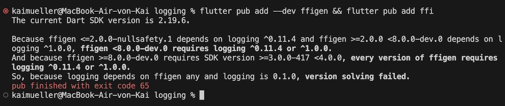

Resources
Watch the video, check the source code and explore the Github Repository.
WARNING: The name of your project matters!
Don't name your project "logging"!
"logging" is the name of an existing Flutter package (search for it in Flutter packages)...
... which is a dependency of the package "ffigen" ...
... which is a dependency of YOUR project!If your project name was "logging" you would run into serious troubles at some point:

Rust Code Snippets
Cargo.toml
[package]
name = "rust"
version = "0.1.0"
edition = "2021"
# See more keys and their definitions at https://doc.rust-lang.org/cargo/reference/manifest.html
[dependencies]
flutter_rust_bridge = "1"
# For the logger
lazy_static = "1.4.0"
log = "0.4.17"
simplelog = "0.12.0"
parking_lot = "0.12.1"
anyhow = "1"
[lib]
crate-type = ["staticlib", "cdylib"]
logger.rs
use std::sync::Once;
use std::time::{Duration, SystemTime, UNIX_EPOCH};
use flutter_rust_bridge::StreamSink;
use lazy_static::lazy_static;
use log::{error, info, warn, Log, Metadata, Record};
use parking_lot::RwLock;
use simplelog::*;
use crate::api::LogEntry;
static INIT_LOGGER_ONCE: Once = Once::new();
pub fn init_logger() {
INIT_LOGGER_ONCE.call_once(|| {
let level = LevelFilter::Debug;
assert!(
level <= log::STATIC_MAX_LEVEL,
"Should respect log::STATIC_MAX_LEVEL={:?}, which is done in compile time. level{:?}",
log::STATIC_MAX_LEVEL,
level
);
CombinedLogger::init(vec![
Box::new(SendToDartLogger::new(level)),
// Box::new(MyMobileLogger::new(level)),
// #[cfg(not(any(target_os = "android", target_os = "ios")))]
TermLogger::new(
level,
ConfigBuilder::new()
//.set_time_format_str("%H:%M:%S%.3f")
//.set_time_format_custom(format_description!("[hour]:[minute]:[second].[subsecond]"))
.build(),
TerminalMode::Mixed,
ColorChoice::Auto,
),
])
.unwrap_or_else(|e| {
error!("init_logger (inside 'once') has error: {:?}", e);
});
info!("init_logger (inside 'once') finished");
warn!(
"init_logger finished, chosen level={:?} (deliberately output by warn level)",
level
);
});
}
lazy_static! {
static ref SEND_TO_DART_LOGGER_STREAM_SINK: RwLock<Option<StreamSink<LogEntry>>> =
RwLock::new(None);
}
pub struct SendToDartLogger {
level: LevelFilter,
}
impl SendToDartLogger {
pub fn set_stream_sink(stream_sink: StreamSink<LogEntry>) {
let mut guard = SEND_TO_DART_LOGGER_STREAM_SINK.write();
let overriding = guard.is_some();
*guard = Some(stream_sink);
drop(guard);
if overriding {
warn!(
"SendToDartLogger::set_stream_sink but already exist a sink, thus overriding. \
(This may or may not be a problem. It will happen normally if hot-reload Flutter app.)"
);
}
}
pub fn new(level: LevelFilter) -> Self {
SendToDartLogger { level }
}
fn record_to_entry(record: &Record) -> LogEntry {
let time_millis = SystemTime::now()
.duration_since(UNIX_EPOCH)
.unwrap_or_else(|_| Duration::from_secs(0))
.as_millis() as i64;
let level = match record.level() {
Level::Trace => Self::LEVEL_TRACE,
Level::Debug => Self::LEVEL_DEBUG,
Level::Info => Self::LEVEL_INFO,
Level::Warn => Self::LEVEL_WARN,
Level::Error => Self::LEVEL_ERROR,
};
let whole_msg = format!("{}", record.args());
let tag;
let user_id;
let user;
let msg;
if whole_msg.starts_with("my_domain") {
let vector: Vec<&str> = whole_msg.split("@@@").collect();
//Position 1: Domain
//Position 2: Tag
tag = format!("{}", vector[1]);
//Position 3: User-ID
user_id = format!("{}", vector[2]).to_string();
//Position 4: User
user = format!("{}", vector[3]).to_string();
//Position 5: Message
msg = format!("{}", vector[4]);
} else {
tag = record.file().unwrap_or_else(|| record.target()).to_owned().to_string();
user_id = "".into();
user = "".into();
msg = format!("{}", record.args());
}
LogEntry {
time_millis,
level,
tag,
user_id,
user,
msg,
}
}
const LEVEL_TRACE: i32 = 5000;
const LEVEL_DEBUG: i32 = 10000;
const LEVEL_INFO: i32 = 20000;
const LEVEL_WARN: i32 = 30000;
const LEVEL_ERROR: i32 = 40000;
}
impl Log for SendToDartLogger {
fn enabled(&self, _metadata: &Metadata) -> bool {
true
}
fn log(&self, record: &Record) {
let entry = Self::record_to_entry(record);
if let Some(sink) = &*SEND_TO_DART_LOGGER_STREAM_SINK.read() {
sink.add(entry);
}
}
fn flush(&self) {
// no need
}
}
impl SharedLogger for SendToDartLogger {
fn level(&self) -> LevelFilter {
self.level
}
fn config(&self) -> Option<&Config> {
None
}
fn as_log(self: Box<Self>) -> Box<dyn Log> {
Box::new(*self)
}
}
api.rs
use crate::logger;
use anyhow::Result;
use flutter_rust_bridge::StreamSink;
use log::{trace, debug, warn, info, error};
pub struct LogEntry {
pub time_millis: i64,
pub level: i32,
pub tag: String,
pub user_id: String,
pub user: String,
pub msg: String,
}
// Dummy function to fix Rust compiler complaints...
// See https://github.com/fzyzcjy/flutter_rust_bridge/issues/398
// Workaround:
// 1. Save Rust Code
// 2. Execute flutter_rust_bridge_codegen command
// 3. Make any change to Rust code (e.g. add blank) and save again
// -> next compile is ok
#[allow(dead_code, unused_variables)]
pub fn dummy(a: LogEntry) {}
pub fn rust_set_up() -> String {
logger::init_logger();
"Logger was initialized".into()
}
pub fn create_log_stream(s: StreamSink<LogEntry>) -> Result<()> {
logger::SendToDartLogger::set_stream_sink(s);
Ok(())
}
pub fn publish_message(message: String) {
trace!("TRACE --------------- {}", message );
debug!("DEBUG --------------- {}", message );
warn!("WARNING --------------- {}", message );
info!("INFO --------------- {}", message );
error!("ERROR --------------- {}", message );
debug!("my_domain@@@my_tag@@@uuid@@@name@@@This logger message comes from RUST:\n{}", message );
}
lib.rs
mod api;
mod logger;
Flutter / Dart Code Snippets
pubspec.yaml
Don't just copy & paste the content of pubspec.yaml
You have to adjust the property name in line 1:
replace the value <NAME_OF_YOUR_PROJECT> by the name of your project
name: <NAME_OF_YOUR_PROJECT>
description: Logging Example App.
publish_to: 'none' # Remove this line if you wish to publish to pub.dev
version: 1.0.0+1
environment:
sdk: '>=2.19.6 <3.0.0'
dependencies:
flutter:
sdk: flutter
cupertino_icons: ^1.0.2
ffi: ^2.0.2
flutter_rust_bridge: ^1.75.2
freezed_annotation: ^2.2.0
flutter_chat_ui: ^1.6.6
file_picker: ^5.3.0
image_picker: ^0.8.7+4
open_filex: ^4.3.2
path_provider: ^2.0.15
dev_dependencies:
flutter_test:
sdk: flutter
flutter_lints: ^2.0.0
ffigen: ^7.2.11
build_runner: ^2.3.3
freezed: ^2.3.3
flutter:
uses-material-design: true
ffi.dart
// This file initializes the dynamic library and connects it with the stub
// generated by flutter_rust_bridge_codegen.
import 'dart:ffi';
import 'bridge_generated.dart';
import 'bridge_definitions.dart';
export 'bridge_definitions.dart';
// Re-export the bridge so it is only necessary to import this file.
export 'bridge_generated.dart';
import 'dart:io' as io;
const _base = 'rust';
// On MacOS, the dynamic library is not bundled with the binary,
// but rather directly **linked** against the binary.
final _dylib = io.Platform.isWindows ? '$_base.dll' : 'lib$_base.so';
final Rust api = RustImpl(io.Platform.isIOS || io.Platform.isMacOS
? DynamicLibrary.executable()
: DynamicLibrary.open(_dylib));
main.dart
import 'dart:convert';
import 'dart:io';
import 'package:file_picker/file_picker.dart';
import 'package:flutter/material.dart';
import 'package:flutter/services.dart' show rootBundle;
import 'package:flutter_chat_types/flutter_chat_types.dart' as types;
import 'package:flutter_chat_ui/flutter_chat_ui.dart';
import 'package:http/http.dart' as http;
import 'package:image_picker/image_picker.dart';
import 'package:intl/date_symbol_data_local.dart';
import 'package:mime/mime.dart';
import 'package:open_filex/open_filex.dart';
import 'package:path_provider/path_provider.dart';
import 'package:uuid/uuid.dart';
import 'ffi.dart';
void main() {
initializeDateFormatting().then((_) => runApp(const MyApp()));
}
class MyApp extends StatelessWidget {
const MyApp({super.key});
@override
Widget build(BuildContext context) => const MaterialApp(
home: ChatPage(),
);
}
class ChatPage extends StatefulWidget {
const ChatPage({super.key});
@override
State<ChatPage> createState() => _ChatPageState();
}
class _ChatPageState extends State<ChatPage> {
List<types.Message> _messages = [];
final _user = const types.User(id: '82091008-a484-4a89-ae75-a22bf8d6f3ac');
final _tag = "my_tag";
@override
void initState() {
super.initState();
_setup();
}
@override
Widget build(BuildContext context) => Scaffold(
body: Chat(
messages: _messages,
onAttachmentPressed: null, //_handleAttachmentPressed,
onMessageTap: _handleMessageTap,
onPreviewDataFetched: null, //_handlePreviewDataFetched,
onSendPressed: _handleSendPressed,
showUserAvatars: true,
showUserNames: true,
user: _user,
),
);
void _addMessage(types.Message message) {
setState(() {
_messages.insert(0, message);
});
}
void _handleAttachmentPressed() {
showModalBottomSheet<void>(
context: context,
builder: (BuildContext context) => SafeArea(
child: SizedBox(
height: 144,
child: Column(
crossAxisAlignment: CrossAxisAlignment.stretch,
children: <Widget>[
TextButton(
onPressed: () {
Navigator.pop(context);
_handleImageSelection();
},
child: const Align(
alignment: AlignmentDirectional.centerStart,
child: Text('Photo'),
),
),
TextButton(
onPressed: () {
Navigator.pop(context);
_handleFileSelection();
},
child: const Align(
alignment: AlignmentDirectional.centerStart,
child: Text('File'),
),
),
TextButton(
onPressed: () => Navigator.pop(context),
child: const Align(
alignment: AlignmentDirectional.centerStart,
child: Text('Cancel'),
),
),
],
),
),
),
);
}
void _handleFileSelection() async {
final result = await FilePicker.platform.pickFiles(
type: FileType.any,
);
if (result != null && result.files.single.path != null) {
final message = types.FileMessage(
author: _user,
createdAt: DateTime.now().millisecondsSinceEpoch,
id: const Uuid().v4(),
mimeType: lookupMimeType(result.files.single.path!),
name: result.files.single.name,
size: result.files.single.size,
uri: result.files.single.path!,
);
_addMessage(message);
}
}
void _handleImageSelection() async {
final result = await ImagePicker().pickImage(
imageQuality: 70,
maxWidth: 1440,
source: ImageSource.gallery,
);
if (result != null) {
final bytes = await result.readAsBytes();
final image = await decodeImageFromList(bytes);
final message = types.ImageMessage(
author: _user,
createdAt: DateTime.now().millisecondsSinceEpoch,
height: image.height.toDouble(),
id: const Uuid().v4(),
name: result.name,
size: bytes.length,
uri: result.path,
width: image.width.toDouble(),
);
_addMessage(message);
}
}
void _handleMessageTap(BuildContext _, types.Message message) async {
if (message is types.FileMessage) {
var localPath = message.uri;
if (message.uri.startsWith('http')) {
try {
final index =
_messages.indexWhere((element) => element.id == message.id);
final updatedMessage =
(_messages[index] as types.FileMessage).copyWith(
isLoading: true,
);
setState(() {
_messages[index] = updatedMessage;
});
final client = http.Client();
final request = await client.get(Uri.parse(message.uri));
final bytes = request.bodyBytes;
final documentsDir = (await getApplicationDocumentsDirectory()).path;
localPath = '$documentsDir/${message.name}';
if (!File(localPath).existsSync()) {
final file = File(localPath);
await file.writeAsBytes(bytes);
}
} finally {
final index =
_messages.indexWhere((element) => element.id == message.id);
final updatedMessage =
(_messages[index] as types.FileMessage).copyWith(
isLoading: null,
);
setState(() {
_messages[index] = updatedMessage;
});
}
}
await OpenFilex.open(localPath);
}
}
void _handlePreviewDataFetched(
types.TextMessage message,
types.PreviewData previewData,
) {
final index = _messages.indexWhere((element) => element.id == message.id);
final updatedMessage = (_messages[index] as types.TextMessage).copyWith(
previewData: previewData,
);
setState(() {
_messages[index] = updatedMessage;
});
}
void _handleSendPressed(types.PartialText message) {
final textMessage = types.TextMessage(
author: _user,
createdAt: DateTime.now().millisecondsSinceEpoch,
id: const Uuid().v4(),
text: message.text,
);
//_addMessage(textMessage);
_callFfiPublishMessage(message.text);
}
void _loadMessages() async {
final response = await rootBundle.loadString('assets/messages.json');
final messages = (jsonDecode(response) as List)
.map((e) => types.Message.fromJson(e as Map<String, dynamic>))
.toList();
setState(() {
_messages = messages;
});
}
//------- STREAMING & LOGGING --------------------------------------------
types.TextMessage createTextMessage(
String userId, String user, String newMessage, int timeMillis) {
final userObject = types.User(
id: userId,
);
final textMessage = types.TextMessage(
author: userObject,
createdAt: timeMillis,
id: const Uuid().v4(),
text: newMessage,
);
return textMessage;
}
Future<void> _callFfiPublishMessage(String message) async {
await api.publishMessage(message: message);
}
Future<void> _setup() async {
String _result = await api.rustSetUp();
_addMessage(createTextMessage(
"uuid", "", _result, DateTime.now().millisecondsSinceEpoch));
api.createLogStream().listen((event) {
if (event.tag == _tag) {
_addMessage(createTextMessage(
event.userId, event.user, event.msg, event.timeMillis));
} else {
print(
'LOG FROM RUST: ${event.level} ${event.tag} ${event.userId} ${event.user} ${event.msg} ${event.timeMillis}');
}
});
}
}
Github Repository
You will find the complete source code from the video in this repository: